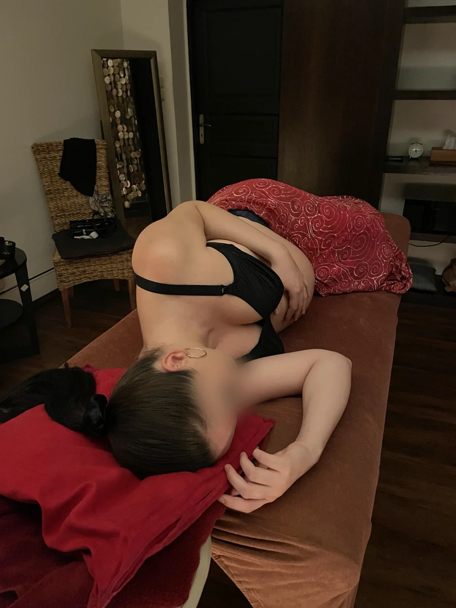

Somatic Recovery Care
Víc než relaxační masáž.
Individuální somatická péče, ve které dotek, dech a klidná přítomnost vytvářejí podmínky pro hlubokou regulaci nervového systému. Nejde jen o chvilkové uvolnění svalů, ale o zklidnění, které si tělo zapamatuje.

Když napětí nesedí jen ve svalech
Tuto péči vyhledávají převážně ženy, které toho nesou hodně – a jejich tělo to ví dřív než hlava.
- Dlouhodobý stres, vyčerpání nebo pocit, že nedokážete vypnout
- Napětí ze vztahů nebo z přetížení odpovědností
- Náročné životní období, po kterém se tělo nemůže „vrátit do klidu“
- Touha znovu zřetelněji vnímat, co vaše tělo potřebuje
- Chuť být jen v bezpečí – bez nutnosti mluvit nebo cokoli vysvětlovat
Bezpečí je základ všeho
Klidná přítomnost
Můj klid funguje jako kotva pro váš nervový systém ještě před prvním dotekem. Tempo, rytmus doteku i dech se během celého ošetření přizpůsobují vám.
Tělo, kam se emoce ukládají
Na začátku zmapujeme, co vás aktuálně tíží. Práci pak zaměřím na místa, kde se daný typ napětí v těle obvykle ukládá – vždy podle vašeho prožívání, ne podle šablony.
Vy rozhodujete
Dotek můžete kdykoli změnit, přerušit nebo odmítnout. Stejný prostor má i ticho a odpočinek bez potřeby mluvit či cokoli dělat.
V tempu, které vám vyhovuje
Vstupní konzultace
Krátce zmapujeme, co aktuálně prožíváte a kde to cítíte v těle.
Ošetření
Dotek bez přerušení po celou dobu, teplo, hudba nastavená podle vás a maximální pohodlí. Žádné mechanické techniky ani předem dané schéma.
Doznění
Chvíle na pozvolný návrat a krátké zakončení.
Délka setkání zahrnuje přibližně 10–15 minut konzultace a závěru.
Pro zvídavé: odborně o metodě
Teoretický základ
Přístup čerpá z polyvagální teorie Stephena Porgese a principů trauma-informed care – péče respektující hranice, možnost volby a individuální reakce těla. Therapeutic presence průvodkyně tvoří základ každého setkání: klidná, pozorná přítomnost funguje jako regulační kotva pro nervový systém klientky ještě před prvním fyzickým kontaktem.
Co-regulation
Vzájemné ovlivňování míry napětí a zklidnění se promítá do tempa práce, rytmu doteku, dechu i způsobu komunikace. Fyzický kontakt není po celou dobu ošetření přerušen. Dech průvodkyně je vědomě synchronizován s dechem klientky – jemný zvuk výdechu v blízkosti horní části těla působí jako přirozený podnět k prohloubení a zpomalení dechu bez verbálního pokynu. Tento mechanismus pracuje přímo na úrovni autonomního nervového systému a aktivuje ventrální vagus, větev parasympatiku spojenou s pocitem bezpečí a klidu. Teplo, hudba nastavená podle individuální potřeby a maximální fyzický komfort jsou podmínkou pro neuroceptive safety.
Somatická mapa emocí
Součástí vstupní konzultace je zmapování aktuálního psychického zatížení. Na základě somatické mapy emocí – propojení interocepce, emočních stavů a tělesného prožívání popsaného v odborné literatuře – je práce cíleně zaměřena na oblasti těla, kde se daný typ napětí ukládá. Při vztahovém napětí může jít primárně o bedra, hrudník, břicho a stehna, při přetížení z odpovědnosti o ramena, hlavu, ruce a plosky. Tyto souvislosti nejsou pevným schématem – tělesné projevy emocí jsou individuální. Grounding zajišťuje plný kontakt dlaní nebo přiměřený tlak celé váhy rukou, který aktivuje proprioceptivní receptory a podporuje aktivaci ventrálního vagu.
Collaborative somatic approach
Klientka není pasivní příjemkyní, ale aktivní spolutvůrkyní procesu. Průběžný informed consent znamená možnost dotek změnit, přerušit nebo odmítnout v kterémkoli okamžiku. Cílem je podpořit zklidnění, úlevu od napětí a zřetelnější vnímání vlastních tělesných potřeb.
Pravidelnost se vyplatí
| 60 min | 90 min | |
|---|---|---|
| Jednorázová návštěva | 1 300 Kč | 1 900 Kč |
| Pravidelná péče2× měsíčně | 1 200 Kč | 1 700 Kč |
| První návštěvaza cenu pravidelné péče | 1 200 Kč | 1 700 Kč |
Pravidelná cena platí, když si druhý termín v daném měsíci domluvíme předem. Délka zahrnuje přibližně 10–15 minut konzultace a závěru.
Masáže probíhají v El Guapo Fight Academy, Na Rovnosti 2854/13A, Praha 3. Stálým klientům mohu po individuální domluvě přijet s vlastním lehátkem i domů – v Praze a blízkém okolí.